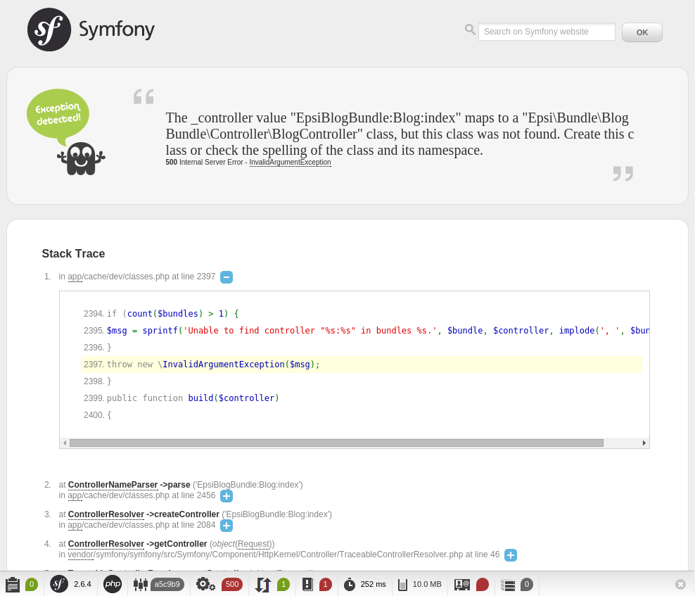
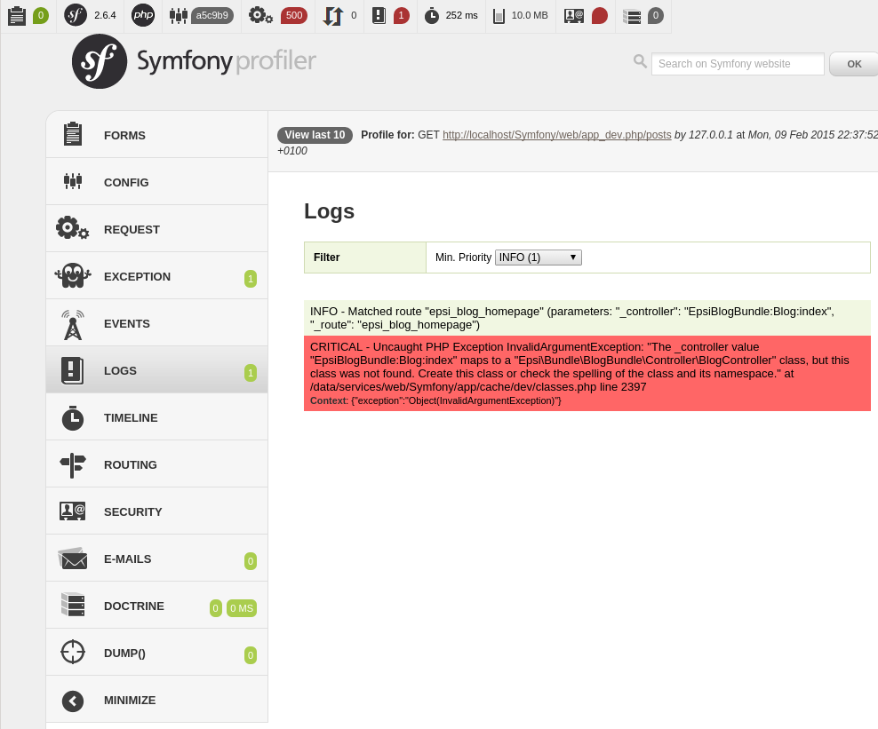

Le routing¶
Le routing fait la correspondance entre les URLs et les les contrôleurs. La configuration de ce mapping se fait dans les fichiers routing.yml se trouvant dans le répertoire config de l’application et des bundles.
Créons les premières routes de notre blog :
# src/Epsi/Bundle/BlogBundle/Resources/config/routing.yml
epsi_blog_homepage:
path: /posts
defaults: { _controller: EpsiBlogBundle:Blog:index }
epsi_blog_show:
path: /post/{id}
defaults: { _controller: EpsiBlogBundle:Blog:show }
epsi_blog_add:
path: /post/add
defaults: { _controller: EpsiBlogBundle:Blog:add }
Format de fichiers YAML
L’indentation des fichiers YAML se fait avec des espaces et non des indentations.
Fonctionnement¶
Les routes ci-dessus sont composés de trois éléments :
- un identifiant. Il doit être unique dans l’application, c’est pour cela que l’on reprend les éléments du nom du bundle ;
- un chemin (path). C’est URL de la route. Les éléments entre {} sont des paramètres de l’URL, comme l’ID d’un objet ;
- les paramètres de la route defaults qui contient notamment le contrôleur à appeler.
Voici comment fonctionne le routeur pas à pas :
On appelle l’URL /post/5 ;
Le routeur essaie de faire correspondre cette URL avec le path de la première route. Ici, /post/5 ne correspond pas du tout à /posts (ligne path de la première route) ;
- Le routeur passe donc à la route suivante. Il essaie de faire correspondre /post/5 avec /post/{id}. Cette route correspond, car nous avons bien : * /post (URL) = /post (route) ;
- 5 (URL) = {id} (route) ;
Le routeur s’arrête donc, il a trouvé sa route ;
Dans le paramétrage de la route, il trouve quel contrôleur appeler : EpsiBlogBundle:Blog:show ;
Le routeur renvoie donc ces informations au Kernel ;
Le noyau va exécuter le contrôleur.
Dans le cas où le routeur ne trouve pas de correspondance pour une URL, il renvoi une erreur 404.
Allons sur la page http://localhost/Symfony/web/app_dev.php/posts :
En haut de la page est affiché un message d’erreur, un exception a été détectée.
Dans la seconde partie, la stack trace. Il s’agit de la liste des fonctions appelées depuis le contrôleur frontal jusqu’à la ligne qui a levé l’exception.
Tout en bas, on trouve le Profiler, un outil de développement où l’on peut trouver de nombreuses informations pouvant aider à la correction de bugs et d’erreurs, ou à l’optimisation. En cliquant sur la barre de profiling, on arrive sur une interface plus complète :
Convention de nommage des contrôleurs¶
Revenons à vos route. Lors de la configuration des routes dans le fichier routing.yml, les contrôleurs sont spécifiés avec la notation suivante EpsiBlogBundle:Blog:index. Elle est composée de trois éléments :
- EpsiBlogBundle : le nom du bundle
- Blog : le nom du contrôleur à ouvrir, en terme de fichier, cela correspond à controller/BlogController.php
- index : le nom de l’action à exécuter au sein du contrôleur, il s’agit de la fonction public function indexAction() implémentée dans le contrôleur Blog